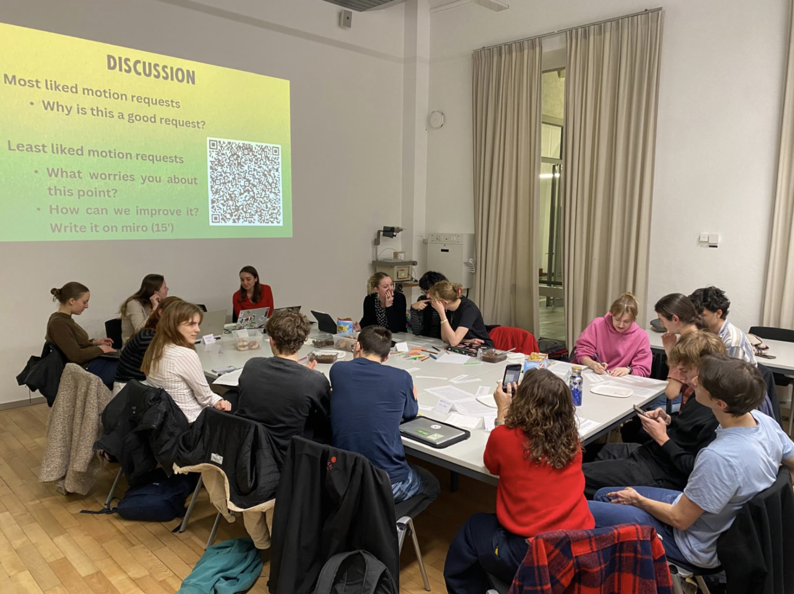
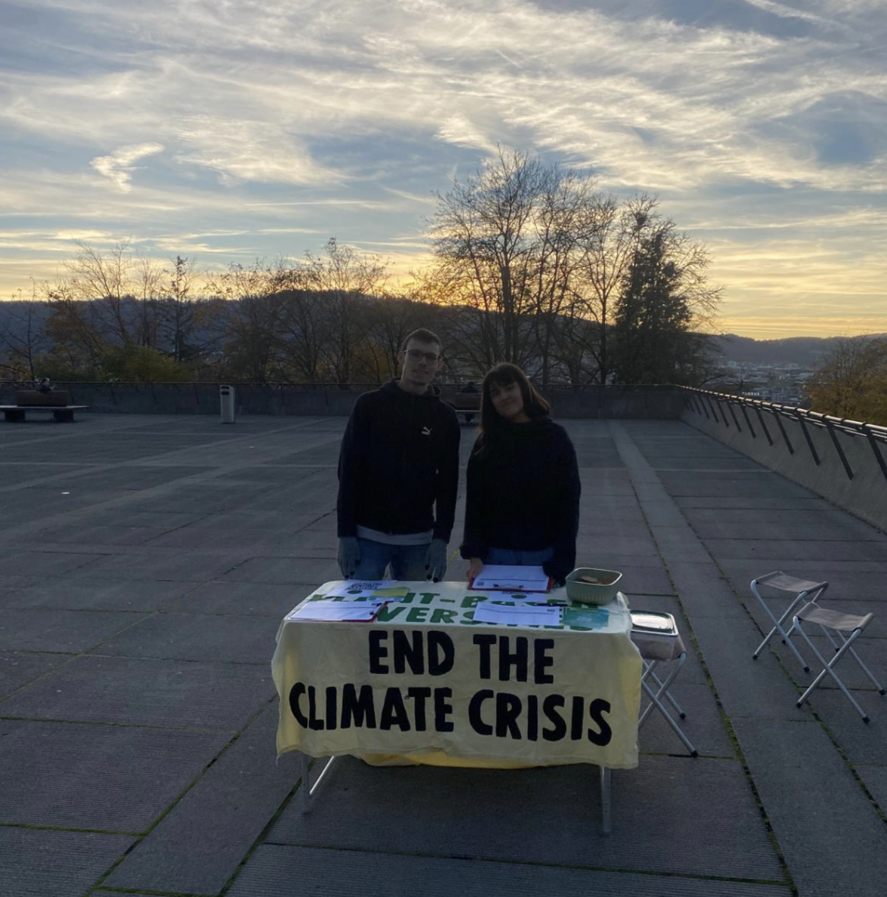

Food is a climate issue
Food is one of the most powerful levers in climate action: it accounts for around 20% of greenhouse gas emissions and a quarter of total environmental impact. The Canton of Zurich states in its Sustainable Nutrition Policy (RRB Nr. 1319/2022)
that increasing the share of plant-based proteins occupies a central role in achieving its climate and environmental goals. The City of Zurich, in its Sustainable Nutrition Strategy (2024), targets a 30% reduction in the food-related
environmental and climate burden of its catering operations by 2030 — with a plant-forward approach as a key instrument.
ETH has a target — and a tray
Within this framework, ETH Zurich has committed to reducing greenhouse gas emissions by at least 50% by 2030 compared to 2006 through its «ETH Net Zero» programme. Campus catering — used daily by thousands of students and staff — is a
concrete and actionable area in which progress can be made. As a leading scientific institution at the forefront of climate research, ETH Zurich also carries a broader responsibility: universities have historically been engines of societal
change, and their institutional choices send a signal far beyond their own walls.
Since October 2025, the Food Team of the Student Sustainability Committee (SSC) has developed two motions in consultation with Student Associations and Commissions: Motion 1 calls on the VSETH board to actively participate in the ongoing strategic catering discussions at ETH, representing a climate-friendly and more plant-based position — particularly regarding the upcoming catering contracts. Motion 2 calls on VSETH, together with the SSC, to develop a long-term roadmap for more sustainable catering at ETH through a participatory process involving all Student Associations. The two motions are complementary: one establishes immediate capacity to act, the other builds the democratic mandate for a long-term position.
These two motions are the result of a full semester and a half of consultations, iterations, and exchanges with the broader student community.
Where it started: the Food Team
The initial drafts of the motions were sketched by the Food Team of the SSC, formerly known as Plant-Based Universities, drawing on scientific evidence and benchmarks from peer institutions across Europe.
The iterative process of writing the actual motion - or how Student Associations gave us a reality check
The draft was stress-tested through an extensive consultation process across Fall Semester 2025. The Food Team visited Fachverein board meetings directly, gathering critical feedback on affordability, inclusivity, dietary diversity, and
taste. Board visits were complemented by workshops at the HoPo Weekend and NAGETH, where representatives discussed and refined the proposals in structured settings.

Grounding it institutionally
In parallel, the SSC engaged in thorough exchanges with the VSETH board, presidency, and GastroKo student delegate. Conversations with ETH's Sustainability Office ensured the proposals connect directly with ongoing strategic processes at ETH
level.
800+ voices
The motions are backed by a petition of over 800 signatures collected at Polyterrasse and Hönggerberg, during Sustainability Week Zurich 2025, and at the Activity Fair 2025 — reflecting broad and genuine demand for change.
